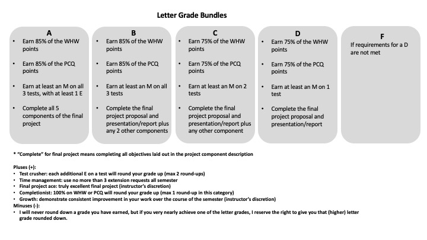

Syllabus
Classroom expectations
- I will stay home if I am feeling sick and make arrangements to deliver the course material
- I will work with you to arrange accommodations when you need them
- I will respect your time by starting and ending class on time
- I will answer your questions thoughtfully, and if I don’t know the answer, I will follow up in a timely manner
- I will embrace who you are as whole people
- I will model respect, openness, and engagement, and foster a supportive and inclusive environment
- I will be honest when I make mistakes, because failure is part of growing
- That you will stay home if you are sick and contact me via email to arrange accommodations
- That you genuinely attempt to engage with the course
- That you ask questions if you are confused (you may do this privately – there is no obligation to ask during class hours)
- That you communicate with me when you have problems that interfere with your ability to engage with the coursework
- That you treat your peers with respect and openness, and that you participate in creating an inclusive, supportive, and engaged classroom
- Perfection. Ever. It’s a myth.
- That you will ‘sit still’ or ask for permission to leave the classroom to go to the bathroom or if you just need a minute.
- That everyone will learn in the same way. You do not have to match some “model student” to do well in this class
Assignments and Grading
Assignments fall into “bundles,” which contribute to your grade in specific ways. Your performance on each bundle determines your rough letter grade (full letters). Beyond that, you can achieve grade boosts, which round your grade up, e.g. from a B to a B+, or a B+ to an A-.
You can learn more about each category below.
Grading Scheme
Table of letter grades
| Letter grade | Pre-Class Quizzes | WHW + self-assessments | Unit tests (x3) | Final Project (5 components) |
|---|---|---|---|---|
| D | Earn 75% of the points | Earn 75% of the points | At least M on 1 | Proposal and Presentation/Report |
| C | Earn 75% of the points | Earn 75% of the points | At least M on 2 | Proposal and Presentation/Report plus any other component |
| B | Earn 85% of the points | Earn 85% of the points | At least M on all 3 | Proposal and Presentation/Report plus any 2 other components |
| A | Earn 85% of the points | Earn 85% of the points | At least M on all 3, plus 1 E | Complete all components |
Bundle visualization

Grading scales
Homeworks and pre-class quizzes will be graded on a points scale. Your total grade for the bundle will be your average points on the assignments. Remember that these are not graded on “correctness” but rather on engaging in good faith.
The five final project components will each have objectives you must meet for them to be considered “complete.” These will be clearly laid out for each component so you know exactly what to do to complete them.
The unit tests will be graded on the following scale:
- E: excellent – this is a thorough and correct response that demonstrates excellent understanding of the concepts and makes proper use of the mathematical skills expected in this class.
- M: meets expectations – this is a response that demonstrates solid understanding of the concepts but perhaps includes some small mathematical errors or minor conceptual mistakes.
- U: unsatisfactory / does not meet expectations – this is an answer that applies the concepts incorrectly, misunderstands the point of the question, does not complete the question, fails to follow instructions, and/or contains significant mathematical errors
- N: no submission – if you do not take the test, you will receive an N.
E and M are considered passing grades. U and N are considered failing grades, but you have one chance to make up that grade, as every test will be given twice.
Grading categories
In order to get the most out of class, you need to prepare. We will spend most of our time in class practicing problem solving, and before class you will need to read the appropriate sections of the book and take a “quiz”. Some readings are longer than others (and I’ve included the page count in the course schedule so you can be prepared), but every reading quiz is 5 questions, some of which will be practice problems.
Given the purpose of the pre-class quizzes, I will not offer extensions, except in case of a major medical or family emergency that causes you to miss class.
There are seven homework sets (one every week except on test weeks) as well as a self-reflection form.
You will turn in your work on the homework by scanning and uploading as a PDF to Lyceum. These are due by class time on Friday. You will then have a self-reflection due 72 hours later (by class time on Monday).
The problem sets are self-graded. Here’s how that works:
- You get 50% of the points just for submitting the homework on time.
- When you submit your work, you will receive access to the (detailed) solutions.
- The rest of the points come from comparing your work to the solutions and filling out a guided self-reflection form.
- These forms are not intended to make you do “extra work” – these are to help both you and me understand where you need more practice and more support.
You may request extensions on the homeworks using the extension form.
There will be three tests on the material in this class. Each test will be offered two times, two weeks apart, giving you two opportunities to achieve your desired grade on the tests. The tests are graded on an E/M/U/N scale, and an E and M are both considered passing grades.
You will be provided with an equation sheet for each test, which will have some useful equations, integrals, trig identities, etc. You may also bring a single-sided 8.5”x11” sheet of paper with equations and notes - hand-written (please speak to me if you need to type the sheet and we will come up with a plan). This paper will be turned in with your test.
If you have to miss class or leave early on a Friday due to an approved excuse, you may take the test at the testing center. You must do this no more than 2 days before the test is given and no more than 5 days after (i.e. starting the Wednesday before the test and ending the Wednesday after the test), and you can request this option through AESS using this form. This is so I can provide timely feedback to everyone on the test. If you are not sure your absence is excused or you feel you have a special circumstance, come and talk to me about it and we will discuss the options.
You don’t have to do anything special to take the test a second time, but I recommend coming to my office hours or scheduling a meeting with me if you are at all confused about what you missed. I am more than happy to help talk you through the test.
By the end of this class, you will have had two semesters of instruction in quantum mechanics and be well-versed in the fundamentals and how to use the mathematics to derive real-world measurements. Now, you get a chance to pick something about quantum mechanics that you want to know more about and dig deeply.
This project is designed to be open-ended. I want you be as creative as you want to be. If you want to con- nect quantum mechanics to the arts, be my guest! If you want to do a deep dive into the historical development of the ideas of quantum mechanics, please enlighten us! If you want to do a computational project where you apply your programming skills to a concept you learned in this class, that would be awesome! If you want to teach a topic from the book that we haven’t covered yet to the rest of the class, we would love that! Want to record a podcast interviewing scientists in the field? Great!
Think about where you want to stretch your understanding, and let that guide you.
Since there is so much freedom, I’m building a lot of scaffolding into the process, and that scaffolding will be the basis of the grade. So if you want to take a big risk and try something new, you don’t have to worry that if it doesn’t go well, you will fail. The scaffolding is detailed on Lyceum, and there are five parts: the pitch, the proposal, the annotated bibliography, the progress report, and the final presentation and write-up. You must do the proposal and the final presentation and write-up to pass the class – completing other components of the final project will contribute to higher base letter grades (see the grading scheme for more details.)
Grading boosts
Your base grade will be calculated from the table above, but you can round your grade up in a number of ways.
I will apply as many grade boosts as you achieve, with one exception:
You can only achieve an A+ in this class if you receive a base A grade. The A+ grade does not have an impact on your GPA, and so I am reserving it as a way of acknowledging especially excellent work across the course of the semester.
Each additional E you earn above what was required for your base letter grade will round your grade up (max 2 round-ups).
If you use no more than 3 extension requests all semester, I will round your grade up.
If you get 100% on the homework or the pre-class quizzes, I will round your grade up (one round-up only).
If you do go above and beyond expectations on your final project, I will round your grade up (this is at my discretion).
If you demonstrate consistent improvement in your work across the semester, I will round your grade up.
Deadlines and Extensions
If you need an extension, you may request one using this form. I recognize that things come up and you may require flexibility at some point in the semester. Please feel free to reach out to me directly if you are struggling to meet a deadline. I want to support you and make sure you have the best possible chance for success in this class, and the only way I can help is if you communicate with me. Extension requests are always due before the deadline. Work submitted after the deadline without an approved extension will not be graded.
In general, I am happy to be flexible. Please note, however, that some assignments will have stricter deadlines. These assignments include the reading quizzes and the final project presentation, and the nature of the deadlines is discussed in their descriptions above.